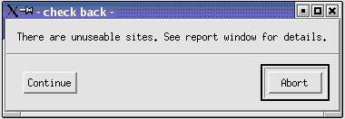
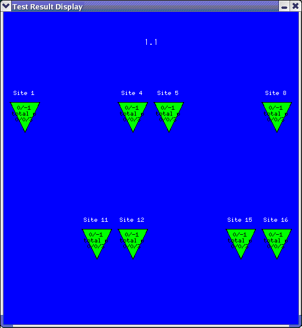

Site disabling
In a multisite environment, a digital channel is usually dedicated to a specific test site. When this channel becomes unavailable, the whole site becomes unavailable for testing. With the site disabling function you can make a site unavailable without affecting the testing on other sites.
Site disabling allows you to load the pin configuration as if all sites had working channels, even if a digital channel for one of the sites is not available, for example, because it became defective. With site disabling you can use the same testflow and continue testing without having to repair the channel immediately or change your configuration file. Production can continue with degraded throughput. Channel repair can be postponed to a planned maintenance slot. The site disabling function is part of SmarTest.
When a testflow containing unavailable sites is executed, the Check back window lets you decide whether to continue executing the testflow or stop it.

You can disable the defective sites at the handler to avoid the site being further populated. The site numbering does not change.
Even if an unavailable site is still populated by the handler, this site is not tested anymore. Therefore, there will be no binning and no data logging for this site. This prevents the devices in the disabled site from being binned at all. The disabled site will not be visible in the test result display. The figure below shows an example with a number of disabled sites.

When you are testing a wafer, you may want to click Abort in the Check back window to avoid getting untested wafers. Retesting the wafers may exceed the number of touchdowns allowed.
The CI_SITE_DISABLING_AUTOMATE system flag lets you enable or disable the Check back window from SmarTest 6.2.1.
Functional changes
- Introduced before SmarTest 6.3.2